Esterilización Contínua
El proceso de esterilización continua en Industrial Aceitera de Casanare, usa vapor saturado (100°C a presión atmosférica) para cocinar los racimos de fruto fresco durante un tiempo aproximado de 90 minutos; el proceso consiste en fracturar los racimos de fruto fresco mediante un acondicionador de fruto, los racimos acondicionados son transportados por medio de transportadores de cadena hacia el esterilizador continuo, donde se le inyecta vapor a baja presión de forma continua para cocinar el fruto, el flujo de racimos de fruta fresca a través de las cámaras de esterilización es a velocidad constante, lo que garantiza un desfrutado mas eficiente evitando perdidas en procesos posteriores.
Beneficios del proceso de esterilización continua:
- Se reduce significativamente la mano de obra y equipos requeridos para proceso
- Se eliminan los derrames de fruta y regueros de aceite
- Una planta limpia y más segura
- Operación de planta silenciosa (se eliminan desfogues de vapor)
- No se emplean elementos a presión dentro de la planta , eliminando los riesgos asociados a estos
- La caldera opera en régimen de carga constante, facilitando la operación de la misma, disminuyendo emisiones
- Perdidas de aceite y almendra bajas
- Excelente calidad de aceite.
- Proceso Esterilización 
- Turbina de Generación
- Proceso de Calidad 
- Lagunas de Oxidación